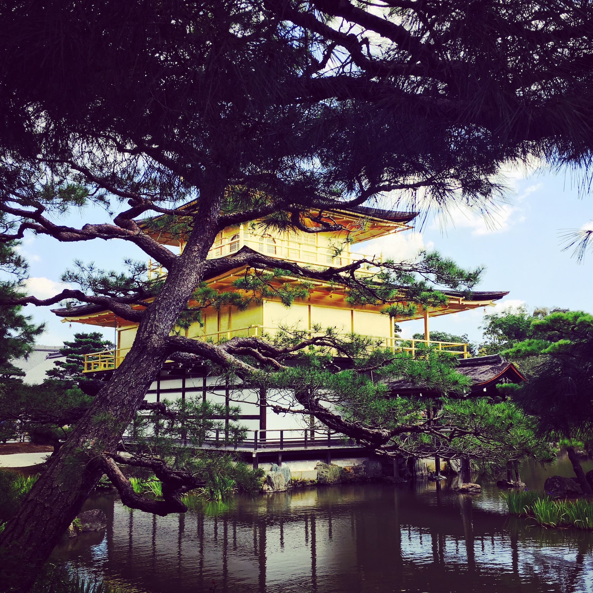
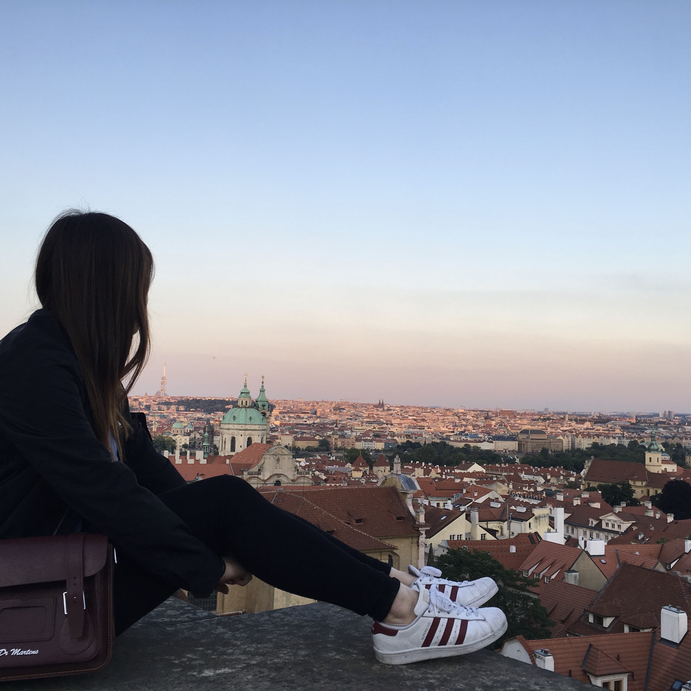
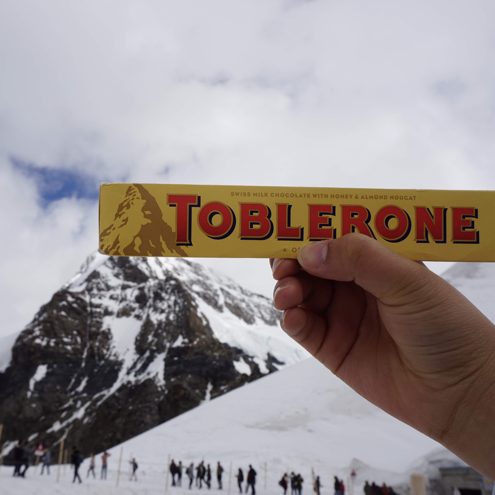

I love travling the world and my goal of life is to visit all 48 countries in Asia and at least 30 countries in Europe. I also love taking pictures while I travel.
Eiffel Tower picture taken by me during Summer 2017
Hungarian Building picture taken by me during Summer 2017
John Lennon wall picture taken by me during Summer 2017

Kinkakuji picture taken by me during Summer 2017

Prague picture taken by me during Summer 2017

Toblerone at Jungfrau picture taken by me during Summer 2017